Women’s dress was characterized by long, flowing tunics and gowns made of wool or linen. The layers included an under-tunic with long sleeves and an outer garment, often belted at the waist. Cloaks and shawls provided warmth, and head coverings, like veils or wimples, were common, reflecting both social and religious norms. 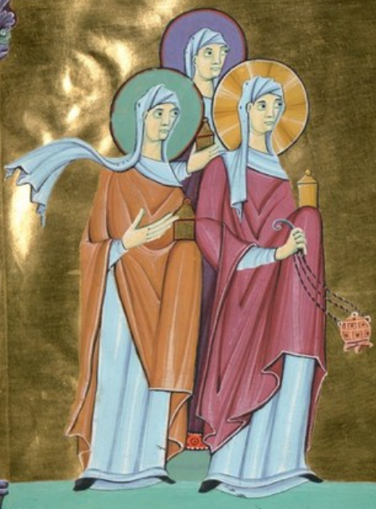 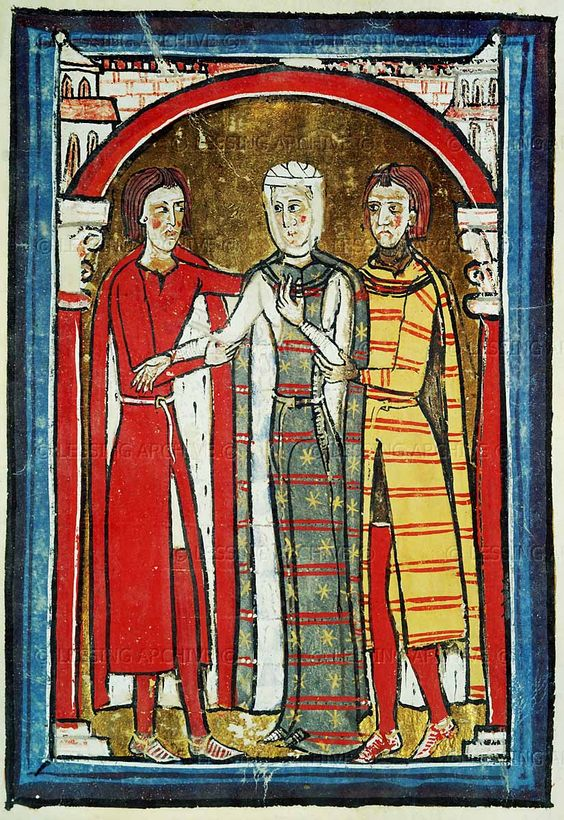
By the 13th century, dresses became more fitted with a gradual introduction of lacing to
define the waist. Women wore long gowns with fitted bodices and flared skirts. Surcoats, a type of sleeveless over-
garment, became fashionable, often worn over a fitted under-dress called a kirtle. Veils and coifs (close-fitting
caps) continued as popular headwear.

Fashion in the 1400s emphasized more structure, with gowns featuring a fitted bodice, square necklines, and fuller skirts. The “houppelande” (a robe-like dress with large, voluminous sleeves) gained popularity, as did the hennin, a tall, conical headdress. Fabrics became richer, with silks, velvets, and embroidery, especially among the wealthy. 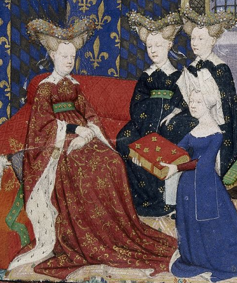 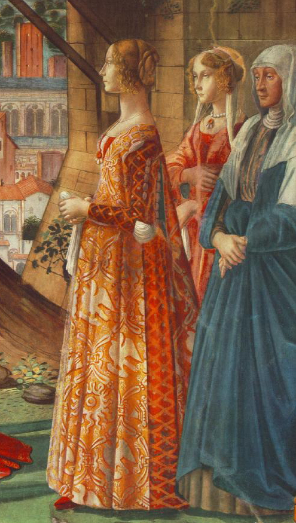 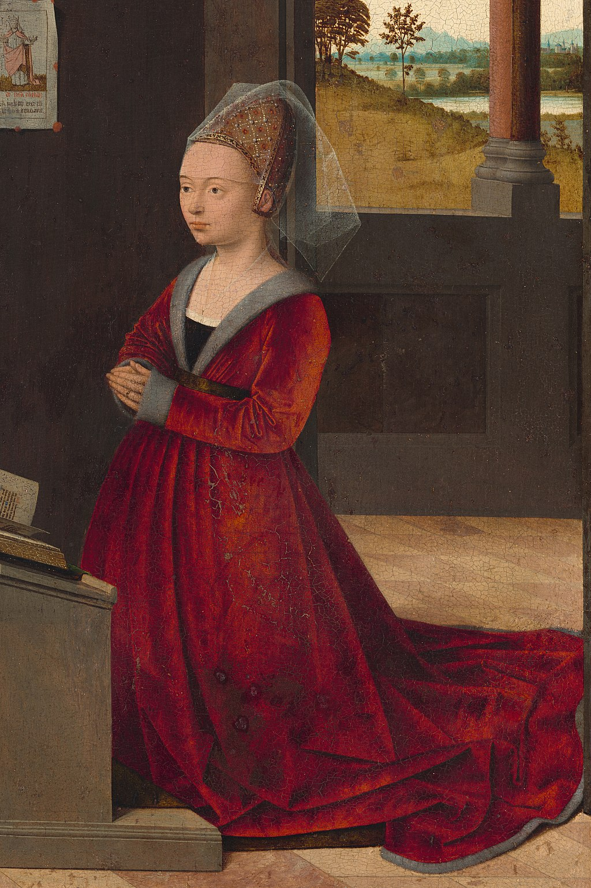
This century saw the introduction of more dramatic silhouettes and detailed embellishments. Dresses had a structured bodice, often with a stomacher (a decorated panel over the front), wide skirts, and lace collars. Sleeves were puffed or slashed, and the “petticoat” style with layers under the skirt became more widespread. Hairstyles became elaborate with curls, and the “fontange” (a tall, lace headdress) emerged later in the century. 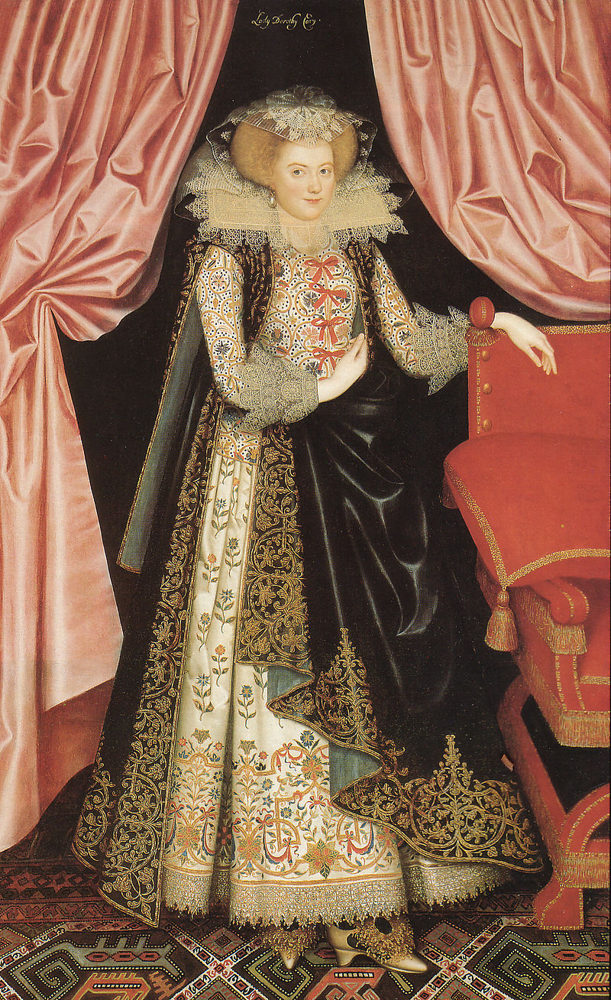 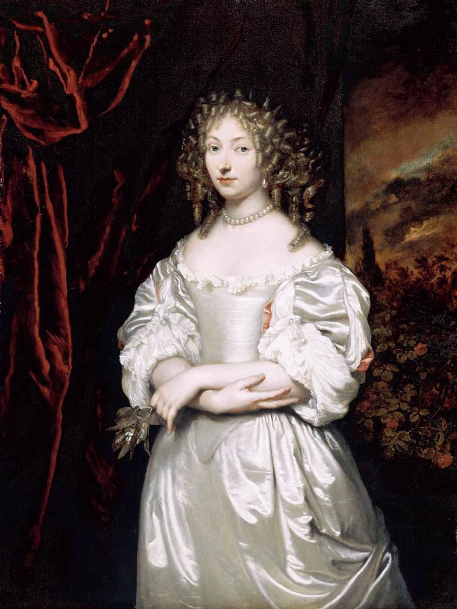 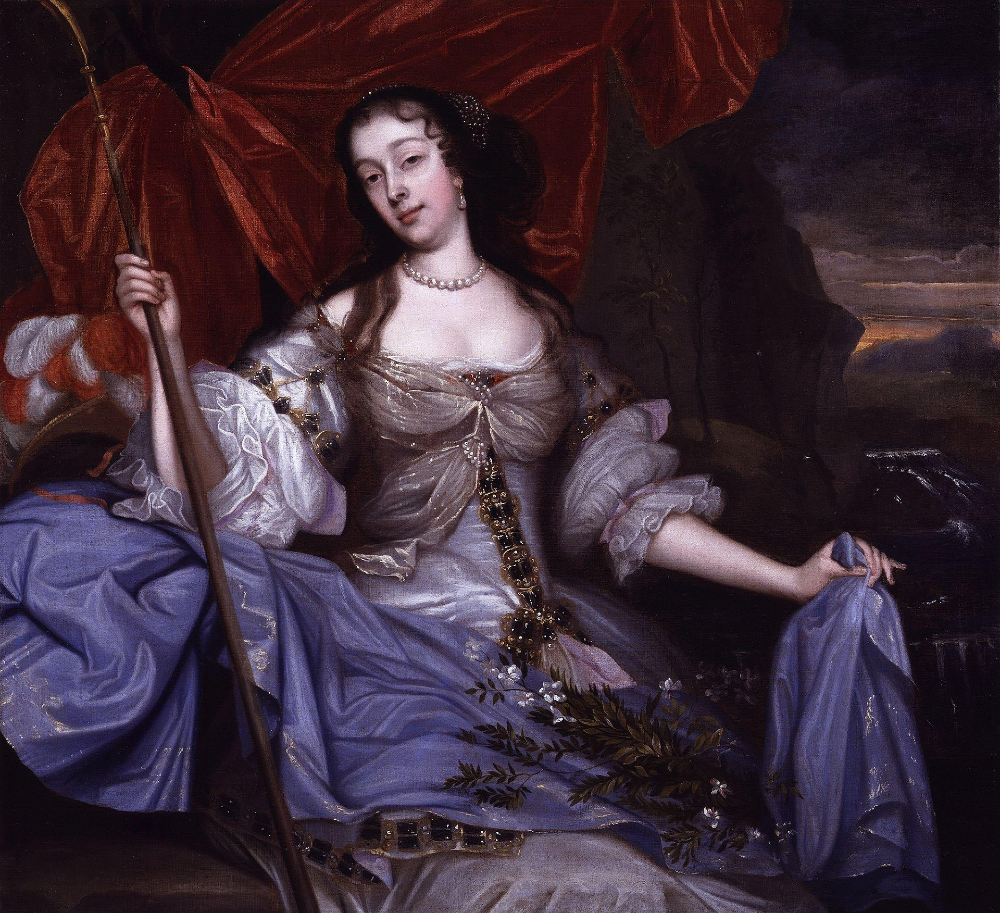
Fashion varied significantly, with early 1800s women embracing high-waisted, flowing
“Empire” dresses inspired by classical antiquity. By the mid-century, crinolines and hoop skirts created wider skirts,
while the late 1800s saw the bustle, which added volume at the back of the dress. Corsets were common, defining
the waist. Fabrics were layered and heavily embellished with lace, ruffles, and bows.
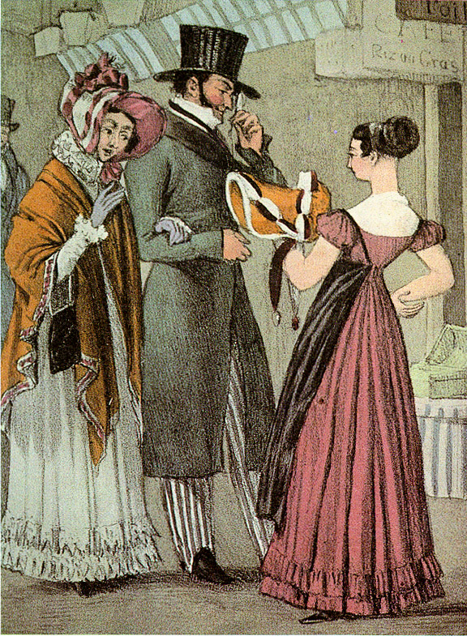
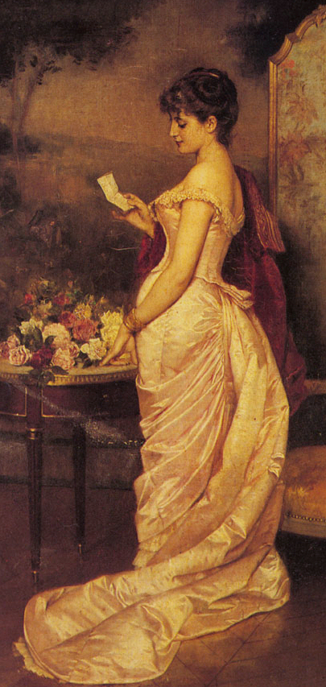

Women’s fashion in the 2000s reflected a mix of casual comfort and diversity in style. Jeans, t-
shirts, dresses, and tailored suits were widely worn, often blending retro influences with modern twists. Fashion
became more inclusive and sustainable, focusing on comfort, individuality, and functionality. Styles ranged from
minimalism to bold colors and patterns, with fast fashion, athleisure, and eco-friendly fabrics shaping the trends.
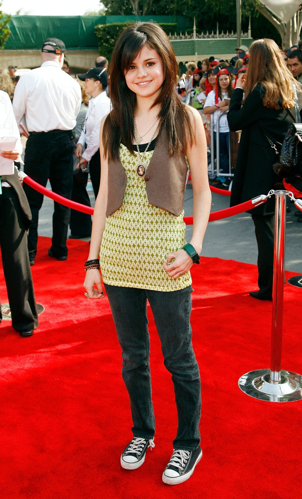

By the year 2200, Western fashion has embraced sustainability and technology in
unprecedented ways. Clothing is primarily made from bioengineered fabrics that can self-repair
and adapt to environmental conditions. Outfits are equipped with embedded sensors that
monitor the wearer’s health and adjust temperature and fit for optimal comfort. The aesthetic
leans towards minimalist designs with clean lines and neutral colors, reflecting a society focused
on efficiency and ecological balance.
.png)
.png)
.png)
Fashion in 2400 is characterized by its fusion of virtual and physical elements. Augmented
reality (AR) clothing allows individuals to change their appearance at will, projecting different
styles and patterns onto basic garments. This era sees a resurgence of bold, vibrant colors and
intricate designs inspired by historical art movements, combined with futuristic materials that are
lightweight and highly durable. Personal expression through fashion is at an all-time high, with
each outfit being a unique blend of digital and physical craftsmanship.
.png)
.png)
.png)
CIn 2600, fashion has become a form of personal technology. Clothing is integrated with
advanced nanotechnology, enabling garments to change shape, color, and texture on
command. This adaptability allows for multifunctional outfits that can transition from casual to
formal with a simple voice command. The style is a mix of sleek, form-fitting designs and
flowing, dynamic fabrics that respond to the wearer’s movements. Fashion is not just about
aesthetics but also about enhancing human capabilities and interaction with the environment.
.png)
.png)
.png)
By 2800, Western fashion has evolved into a symbiotic relationship between humans and their
attire. Clothing is grown from organic materials that are genetically engineered to provide
various benefits, such as enhanced strength, protection, and even healing properties. The
designs are inspired by nature, with flowing, organic shapes and colors that mimic the natural
world. Fashion is deeply personalized, with each garment being a living entity that adapts to the
wearer’s lifestyle and preferences.
.png)
.png)
.png)
In the year 3000, fashion transcends the physical realm entirely. People wear holographic
garments that can be customized in real-time, offering limitless possibilities for self-expression.
These holograms are controlled by neural interfaces, allowing for instantaneous changes in
style, color, and form. The aesthetic is a blend of ethereal, otherworldly designs and futuristic
minimalism, reflecting a society that has moved beyond traditional material constraints. Fashion
in 3000 is a dynamic, ever-changing art form that seamlessly integrates with the digital and
physical worlds.
.png)
.png)
.png)